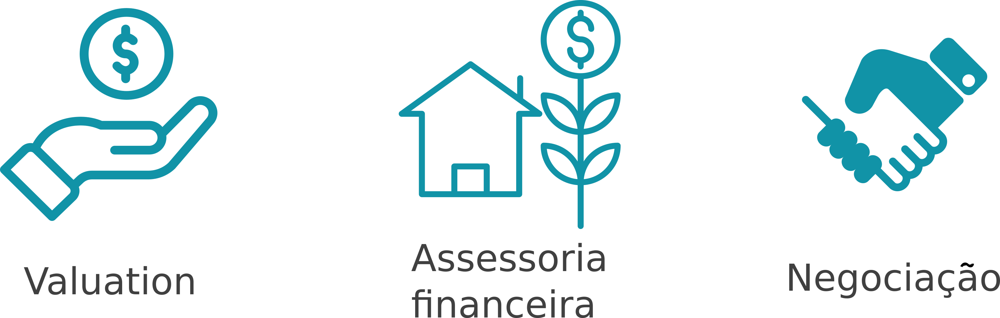

Ajudamos os proprietários de empresas em três frentes principais:
Valuation: Trata-se do termo em inglês para determinação do valor de uma empresa para venda, investimento ou outros objetivos. Há diferentes métodos de valuation e nosso time utiliza os mais praticados e difundidos nos mercados em que atua. Alguns métodos comuns são: • Fluxo de caixa descontado (FCD): é feita uma projeção das receitas, custos e despesas que permite calcular a geração de caixa futuro e o consequente valor presente da empresa. • Múltiplo EBITDA: calcula-se o EBITDA real e ajustado do negócio, identifica-se o múltiplo EBITDA justo e o consequente valor da empresa.
Assessoria financeira: Nosso time tem experiência tendo elaborado o orçamento de mais de 80 escolas no Brasil. Te ajudamos a identificar oportunidades de melhoria de eficiência e potenciais ganhos de sinergia. Os ganhos de sinergia são, por exemplo, as reduções de custo decorrentes da venda para um comprador com escala maior. Mesmo quando não há venda ou quando esta não é imediata, uma análise financeira bem-sucedida permite verificar a saúde da operação e otimizar onde necessário.
Negociação: Dentro de um processo de venda, a negociação é um fator decisivo. Nós te ajudamos a determinar as suas forças e as chamadas alavancas para negociar de forma a maximizar o seu valor. Ajudamos tanto na negociação da empresa em si quando na do imóvel para venda ou aluguel.